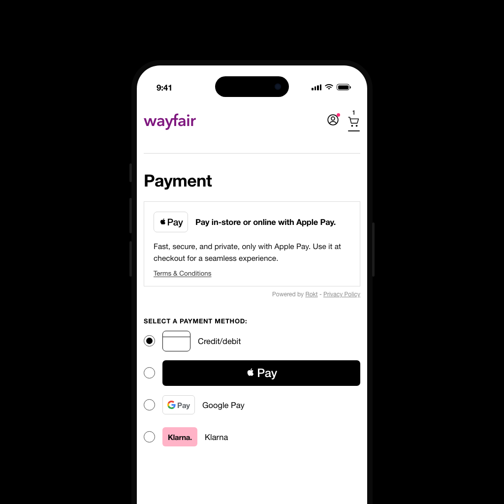

$10Mnet-new advertiser spend
Rokt Pay+ opened a new placement: advertising on the merchant’s payment page. The advertisers it attracted were payment providers — Apple Pay chief among them. Their economics are unusually clean. They earn a fee whenever a shopper pays with their method, so an impression pays for itself the moment it costs less than the fee it generates.

That makes a single quantity decisive. The return on a campaign is arithmetic the buyer can do themselves:
Return = (incremental uses × fee per use) advertiser earns − (impressions × price) advertiser pays
Everything turns on the word incremental — uses the ad caused, not uses that merely followed it. Apple Pay is already one of the most common ways to pay, so a large share of the shoppers who see the offer and then tap it were always going to tap it. We needed an experiment that could show people were using the payment method because we showed the ad.
The industry-standard number is the attributed conversion — the shopper saw the offer, then paid with Apple Pay. On this placement it is close to uninformative. Everyone on a payment page is about to pay by something, and the baseline usage rate for a leading method is already high. Most attributed conversions are shoppers who would have tapped it anyway.
That gives attribution a perverse property here: it rewards popularity rather than persuasion. A method with a large baseline share posts a large attributed rate and a challenger posts a small one, before either ad has changed a single decision. Ranked on attribution, the placement is measuring market share.
The obvious repair — compare shoppers who saw the offer with those who did not — fails for a reason specific to a marketplace. Exposure is not random. An auction decides who sees which offer, and it ranks on predicted conversion, so the unexposed group is the group the model judged least likely to convert. There is no observational correction, because the selection mechanism was engineered to be good at selection.
A randomized holdout: a share of eligible shoppers to whom the offer is never served, with payment-method usage compared across arms. Randomization removes the selection problem by construction — the withheld group is not the group the model liked least, it is a random sample of the same population.
I defined the design — eligibility rule, randomization unit, window, estimator and guardrails — and specified it for engineering, who built the serving and the reporting. I owned the readouts and what they were permitted to claim.
The high baseline is the worst case for statistical power: the lift is small against a base rate that is already large, and that baseline dominates the variance. Rather than model around it, we took it out of the population. Eligibility was restricted to shoppers with no Apple Pay use in the trailing twelve months, which leaves a group whose base rate is near zero — a use in the treatment arm is then far more plausibly something the ad caused. The minimum detectable effect was still agreed before the test rather than discovered after it.
| Parameter | Setting | Why it was set this way |
|---|---|---|
| Eligible population | Shoppers with no Apple Pay use in the trailing 12 months | The baseline is the whole problem, so it was removed rather than modeled around. Excluding habitual users leaves a population whose base rate is near zero, where a use in the treatment arm is far more plausibly something the ad caused. |
| Unit of randomization | Shopper, assigned once and held for the run | Decides what can leak between arms. Randomizing per impression lets one shopper land in both; assigning per user costs power but keeps each shopper on one side for the whole window — which is also what makes an incremental user a quantity the design can count rather than infer. |
| Arms | Offer served in the Pay+ placement vs. offer withheld — fill in whether the slot ran empty or was backfilled | The intervention is the offer being present at all, not which creative ran. What fills the control slot sets what the lift is measured against: empty measures the offer versus nothing, backfilled measures it versus the next-best advertiser. |
| Experiment metric | Incremental uses, incremental users | The advertiser is paid per use, so uses are what their return is computed on. Users say how much of that is a shopper who adopted the method rather than a single transaction — the difference between buying a payment and buying a payer. Clicks and impressions are neither. |
| Guardrail | Merchant checkout conversion rate | The merchant can end the placement. Lift bought at the cost of completed checkouts is not a win. |
| Measurement window | fill in | Long enough to contain the decision, short enough not to absorb usage the ad had nothing to do with. Extending it inflates the baseline faster than the lift. |
| Estimator | fill in | Random assignment makes the point estimate the easy part. The choice here is about variance reduction and how the interval is computed. |
| Variance estimation | Delta method on the ratio metric | Randomization and analysis do not happen at the same unit, so outcomes within a randomization unit are correlated. Usage rate is a ratio of means, not a mean, and a naive binomial standard error understates its variance — which manufactures significance exactly where the baseline is highest. |
| MDE and power | fill in | Agreed with the advertiser before the test, so the readout is contractible rather than negotiable afterwards. |
| Duration / volume | fill in | Follows from the MDE and the base rate. Below the volume it implies, there is no number worth selling. |
$10M in net-new advertiser spend, committed against the readout. The experiment supplied the one term in that calculation the buyer could not observe for themselves — how many of the uses the ad caused — and it arrived with an interval and an MDE agreed before the test, so the media case could be audited rather than believed. I put the readouts in front of GTM and the buyer in the form they could sell — the lift, its interval, and what it did not cover; fill in which advertisers committed and over what period the spend was booked.
fill in — measured lift, with its confidence interval, and the split between new-to-method and existing users. Redacted axes are the norm here; the shape of the result is publishable where the level is not.
How I knew it was real: Randomization defines the baseline, so the identification argument is the design itself rather than a modeling assumption — there is no covariate set to be talked out of. The commercial test is the harder one. These buyers could compute their own return, and the incremental figure is the input that decides whether the placement makes money or loses it. They committed budget against it.
Further reading. Blake, Nosko & Tadelis (2015), Consumer Heterogeneity and Paid Search Effectiveness, Econometrica — attributed conversions vastly overstating incremental value. · Lewis & Rao (2015), The Unfavorable Economics of Measuring the Returns to Advertising, QJE — why advertising lift is so hard to detect. · Gordon, Zettelmeyer, Bhargava & Chapsky (2019), A Comparison of Approaches to Advertising Measurement, Marketing Science — why observational corrections do not recover the experimental benchmark. · Deng, Knoblich & Lu (2018), Applying the Delta Method in Metric Analytics, KDD — variance of ratio metrics when the randomization unit is not the analysis unit.